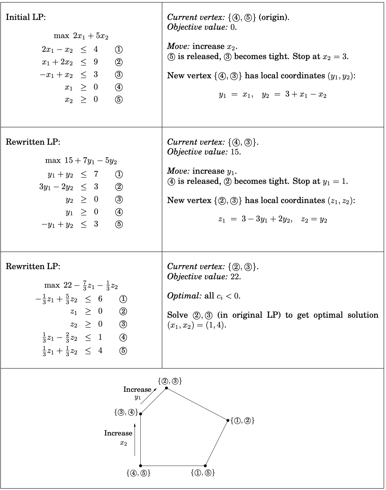

Linear programming is one of the important branches of operations research. (Operational research is a discipline that solves optimal solutions under certain constraints. It applies existing scientific and technological knowledge and mathematical means to solve various problems in real life. It is an applied discipline.) There are also branches of operations research, planning theory, queuing theory, graph theory, decision theory and so on.
Simple linear programming, for example, the profits of two commodities A and B are 2 dollar and 3 dollar respectively. At the same time, the number of products A plus the number of products B is not more than 8, the number of A is not less than four, and the number of B is not more than five. We can set the number of commodity A to be x and the number of commodity B to be y . So the above problem can be formulated as: Objective function: $max$ $Z=2x1+3x2$ Restrictions:
$x1+x2≤8$ $x1≥4$ $x2≤5$ $x1,x2≥0$
The method to solve this kind of problem is to draw the feasible region according to the constraints, and generally the optimal solution can be obtained at the vertices of the feasible region. This method is called the graphical method.
However, in the above example, the value of Z can continue to increase with the increase of x. If the feasible region of the constraints is drawn, it will be found that the feasible region is unbounded. When this happens, it is often because the constraints are not fully considered.
In traditional linear programming, the constraints are a series of inequalities, and the feasible region is the area enclosed by the inequalities. However, in the actual definition, the expressions of the constraints are obviously equals and no inequalities. What's causing it? The two are actually equivalent and can be converted into each other. The feasible region enclosed by the inequality is equivalent to the solution space of the constraint matrix. (The proof is omitted, it can be considered unchanged from the perspective of matrix rank), and the conversion method used is called the slack variable method.
If the constraint equation is ≥, a non-negative slack variable is subtracted from the left side of the equation, and if the constraint equation is ≤, a non-negative slack variable is added to the left side of the equation. For example the equation in the above example
$x1+x2≤8$ $x1≥4$ $x2≤5$ $x1,x2≥0$
Add slack variables x3, x4, x5 as: $max$ $Z=2 * x1+3 * x2+0 * x3+0 * x4+0 * x5$
$x1+x2+x3≤8$ $x1-x4≥4$ $x2+x5≤5$ $x1,x2,x3,x4,x5≥0$
It can be seen that the equation is classified as a standard type at this time, and the coefficients of the newly added slack variables in the objective function are all zero. In the actual sense, it can be understood that the slack variable is an unused resource. Of course, its profit is zero, so the coefficient is zero. .
So we can use this method to convert the feasible region of inequality into standard form.
Simplex: A polyhedron with n+1 vertices in n-dimensional space.
 For example, points in 0-dimensional space, line segments in 1-dimensional space, triangles in 2-dimensional space, and so on. It may be difficult to imagine what a high-dimensional space looks like from a physical point of view, but this is not the crux of our problem. We only need to understand from a mathematical point of view that whenever a set of linearly independent vectors is added to a vector group, the dimension of the vector group increase by one. The dimension can also be understood as the rank of the corresponding matrix.
For example, points in 0-dimensional space, line segments in 1-dimensional space, triangles in 2-dimensional space, and so on. It may be difficult to imagine what a high-dimensional space looks like from a physical point of view, but this is not the crux of our problem. We only need to understand from a mathematical point of view that whenever a set of linearly independent vectors is added to a vector group, the dimension of the vector group increase by one. The dimension can also be understood as the rank of the corresponding matrix.
The simplex method is divided into the following steps: (1) determination of the initial basic feasible solution, (2) finding the basic feasible solution, (3) optimality test, (4) changing the basis variable, and (5) iterative operation.
The geometric meaning of the simplex method is to move from one vertex to another until the optimal vertex is reached. A simplex table can be seen as a Dashboard that monitors this movement algebraically. A lot of information needed by the simplex algorithm can be read from the simplex table, such as what is the Basis solution of the iterative step, what is the reduced cost of the Nonbasis variable, and so on. This information can be used to decide how many variables to advance to the next basis, and what is the calculation iteration step size.
On each iteration, simplex has two tasks:

####The running time of simplex A way to perform an iteration would be to check each potential neighbor to see whether it really is a vertex of the polyhedron and to determine its cost. Finding the cost is quick, just a dot product, but checking whether it is a true vertex involves solving a system of n equations in n unknowns (that is, satisfying the n chosen inequalities exactly) and checking whether the result is feasible. By Gaussian elimination (see the following box) this takes $O(n^3)$ time, giving an unappetizing running time of $O(mn^4)$ per iteration.
$max$ $z=2x1+x2$ $3x1+5x2≤15$ $6x1+2x2≤24$ $x1,x2≥0$
Convert it into tabular form, add slack variable x3 and x4
$max$ $z=2x1+x2+x3+x4$ $3x1+5x2+x3=15$ $6x1+2x2+x4=24$ $x1,x2,x3,x4≥0$
as we can see 2 ≥ 1 and 4≤5, so the colum and row
| Cj | 2 | 1 | 0 | 0 | Θ | ||
|---|---|---|---|---|---|---|---|
| Cb | Xb | b | X1 | X2 | X3 | X4 | |
| 0 | x3 | 15 | 3 | 5 | 1 | 0 | 15/3=5 |
| 0 | x4 | 24 | 6 | 2 | 0 | 1 | [24/6=4] |
| Cj-Zj | [2] | 1 | 0 | 0 |
$C1-Z1=2-(03+06)=2$ $C2-Z2=1-(05+02)=1$ $C3-Z3=0-(01+00)=0$ $C4-Z4=0-(00+01)=0$
| Cj | 2 | 1 | 0 | 0 | Θ | ||
|---|---|---|---|---|---|---|---|
| Cb | Xb | b | X1 | X2 | X3 | X4 | |
| 0 | x3 | 3 | 0 | 4 | 1 | -1/2 | [4/3] |
| 2 | x1 | 4 | 1 | 1/3 | 0 | 1/6 | 4/1/3=12 |
| Cj-Zj | 0 | [1/3] | 0 | -1/3 |
$C1-Z1=2-(00+21)=0$ $C2-Z2=1-(04+21/3)=1/3$ $C3-Z3=0-(01+20)=0$ $C4-Z4=0-(0*-1/2+2*1/6)=-1/3$
| Cj | 2 | 1 | 0 | 0 | Θ | ||
|---|---|---|---|---|---|---|---|
| Cb | Xb | b | X1 | X2 | X3 | X4 | |
| 1 | x2 | 3/4 | 0 | 1 | 1/4 | -1/8 | |
| 2 | x1 | 15/4 | 1 | 0 | -1/12 | 5/24 | |
| Cj-Zj | 0 | 0 | -1/12 | -7/24 |
$C1-Z1=2-(10+21)=0$ $C2-Z2=1-(11+20)=0$ $C3-Z3=0-(11/4+2-1/12)=-1/12$ $C4-Z4=0-(11/8+25/24)=-7/24$
In this case, all Cj-Zj is less than 0, so when $x1=15/4$ and $x2=3/4$ $max$ $z=2x1+x2=2*15/4+3/4=33/4$
The linear programming model mainly includes three parts: decision variables, objective functions, and constraints
Decision variables Decision variables are quantities that can be changed in a problem, such as how many goods to produce, which path to choose, etc. The goal of linear programming is to find the optimal decision variables. Decision variables in linear programming include real variables, integer variables, 0-1 variables, etc.
objective function The objective function is to quantify the decision objective in the problem, which is generally divided into maximizing objective function and minimizing objective function. In linear programming, the objective function is a linear function containing decision variables, such as $max x1+x2$
Constraints Constraints refer to various time, space, human, material and other constraints in the problem. Constraints in linear programming are generally expressed as a set of inequalities containing decision variables, such as $x1+2x2≤10$ $4x1+3x2≤24$ In addition, the range of values of decision variables is called symbolic constraints, e.g. $x1≥0,x2≥0$
The Toyota plant in Kyushu, Japan, manufactures two Toyota SUVs. highlander and 4runner. The median selling price for the two cars is $30k and $40k respectively. It takes 5 hours for machine A and 7 hours for machine B to produce 4runner. It takes 8 hours for Haifei A machine tool and 3 hours for machine B to produce highlander. Machine A can only work 40 hours a week, Machine B can only work 30 hours a week. Use graphic and simplex
$max$ $z=30x1+40x2$ $8x1+5x2≤40$ $3x1+7x2≤24$ $x1,x2≥0$
Simplex:

Negative minimum Zj-Cj is -M-40 and its column index is 2. So, the entering variable is x2.
Minimum ratio is 0 and its row index is 4. So, the leaving basis variable is A2.
∴ The pivot element is 1.
Entering =x2, Departing =A2, Key Element =1

Negative minimum Zj-Cj is -M-30 and its column index is 1. So, the entering variable is x1.
Minimum ratio is 0 and its row index is 3. So, the leaving basis variable is A1.
∴ The pivot element is 1.
Entering =x1, Departing =A1, Key Element =1

Negative minimum Zj-Cj is -40 and its column index is 6. So, the entering variable is S4.
Minimum ratio is 4.2857 and its row index is 2. So, the leaving basis variable is S2.
∴ The pivot element is 7.
Entering =S4, Departing =S2, Key Element =7

Negative minimum Zj-Cj is -90/7
and its column index is 5. So, the entering variable is S3.
Minimum ratio is 3.1707 and its row index is 1. So, the leaving basis variable is S1.
∴ The pivot element is 41/7.
Entering =S3, Departing =S1, Key Element =41/7

Since all Zj-Cj≥0
Hence, optimal solution is arrived with value of variables as : x1=130/41,x2=120/41
Max Z=8700/41
graphical method: